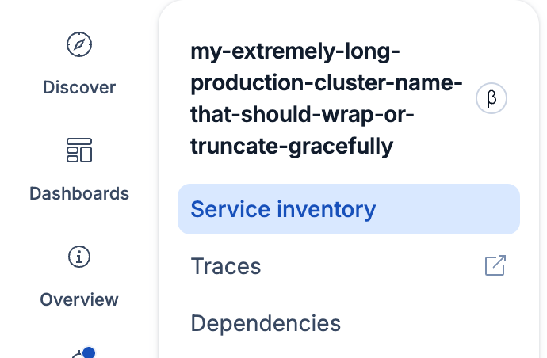
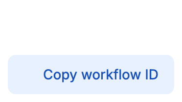
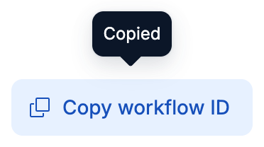
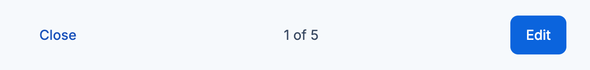
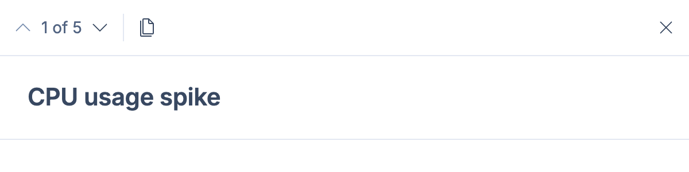

How good are
agents at EUI?
“Do we need to do anything? Agents seem to do a pretty good job already.”
Anton Dosov · OnWeek, November 2026
Long titles wrap.
Truncate long titles. Show the full title in a tooltip only when it's truncated.

export const TruncatedTitle: FC<{ title: string }> = ({ title }) => { const ref = useRef<HTMLHeadingElement>(null); const [isTruncated, setIsTruncated] = useState(false); useLayoutEffect(() => { const element = ref.current; if (!element) return; const measure = () => setIsTruncated(element.scrollWidth > element.clientWidth); measure(); const observer = new ResizeObserver(measure); observer.observe(element); return () => observer.disconnect(); }, [title]); return ( <EuiToolTip content={isTruncated ? title : undefined} display="block"> <h4 ref={ref} css={titleStyles}>{title}</h4> </EuiToolTip> ); };
<EuiTitle size="xs"> <h4 css={headingStyle}> <EuiTextTruncate text={title} /> </h4> </EuiTitle>
Add a button that copies the workflow ID.
<EuiButtonEmpty iconType="copyClipboard" onClick={() => navigator.clipboard.writeText(id)} > Copy workflow ID </EuiButtonEmpty>

<EuiCopy textToCopy={id}> {(copy) => ( <EuiButtonEmpty iconType="copy" onClick={copy}> Copy workflow ID </EuiButtonEmpty> )} </EuiCopy>

Let reviewers step to the previous or next evaluator from inside the detail flyout, and show which one of how many they are on.
<EuiFlexGroup alignItems="center" gutterSize="s"> <EuiFlexItem grow={false}> <EuiButtonIcon iconType="arrowLeft" onClick={onPrevious} /> </EuiFlexItem> <EuiFlexItem grow={false}> <EuiText size="s">{position} of {total}</EuiText> </EuiFlexItem> <EuiFlexItem grow={false}> <EuiButtonIcon iconType="arrowRight" onClick={onNext} /> </EuiFlexItem> </EuiFlexGroup>

<EuiFlyout flyoutMenuProps={{ pagination }} >

The prop has JSDoc in the types. Agents without docs still built their own.
Agents handle familiar EUI work.
Common components and familiar tasks mostly came out right without docs.
They miss what they don't know to look for:
- Built-in EUI solutions
- What EUI renamed or removed
- Kibana conventions
- EUI guidelines
So where do agents look?
Agents read what's on disk.
- Compiled EUI JavaScript
- ~750
- Kibana code that uses EUI
- ~670
- Types,
eui.d.ts - ~140
node -elisting icons and exports- ~105
- EUI website
- 13
Tool calls in the 107 of 515 sessions that looked up EUI, across Cursor, Claude Code and Copilot.
So I put the docs in the npm package.
Not a new idea.
- Markdown docs for each pageWeronika, Tomaszeui#8828kibana-team#3100
- Skills and package metadataArturo, Jose, Ryaneui#9664kibana#269994
- A docs MCP serverWeronika, Kiriakoskibana-team#3100
- Local EUI index and grepJason, Mariusanalyze-eui#eui thread
- A benchmark prototypeWeronikakibana-team#3535#eui-core plan
- MUImaterial-ui#48722Markdown docs in the package
- Next.jsnextjs.orgVersion-matched docs and project instructions
- shadcnui.shadcn.comA skill over its CLI
What I added is a comparison on real Kibana tickets, with and without docs.
Kibana routes agents into the EUI docs.
AGENTS.mdPoints to the docs/kibana-ui skillKibana first, then EUIindex.mdLists every pageThen I ran a bunch of Kibana tasks with and without the docs.
Where should extra guidance help?
I tuned the docs and skill for the last three types.
No docs vs docs + skill · Claude Code + Sonnet · fresh Kibana copy per run · I graded the code, not the running UI
Agents got these tickets mostly right without the docs.
Both setups met the acceptance criteria in 8 of 9 runs.
3 tickets I never tuned on · 3 runs per setup · filled dot = met the acceptance criteria, by a blind agent review of the diff
With docs + skill, agents read the docs in 7 of 9 runs, for about a cent more per run.
Without help, agents rebuilt EUI features.
The docs and skill make agents look for features they don't know exist.
I tuned the docs and skill on these tasks · filled dot = used the built-in EUI feature
* Unreleased prop, in the types only during the eval: shows discovery, not a working dot.
A pointer wasn't always enough. Without the skill, flyout stepping was 0/3.
Reading a guideline didn't mean following it.
A table layout they could copy worked. A list of help text rules didn't.
I tuned the docs and skill on these tasks · filled dot = followed every rule in the guide
Docs got agents to the guidelines. Following every rule is still open.
A valid EUI choice isn't always Kibana's preferred choice.
The /kibana-ui skill tells agents when to use a Kibana wrapper or convention instead of the generic EUI option.
- Check Kibana guidance →
- Use its preferred component where it applies →
- Otherwise use EUI
/kibana-ui skillEuiCallOut or EuiEmptyPromptKbnDangerCalloutEuiPageTemplate.HeaderAppHeaderAgents loaded it first in 7/7 runs. Its description says “Load before any UI change.”
The skill names the Kibana component and links its README.
Make the preferred solution easier to find.
/kibana-ui skill: Kibana components first, then EUI.So yes, agents need a route to what they don't know to look for.